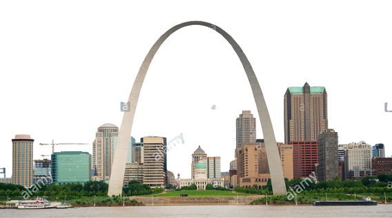

The one and only, Gateway Arch, stands tall along the Mississippi River.
A highlight of St Louis, this
monument is also it's own national park.
The "Gateway to the West" represents many important ideas and values.
There are 3 places that you need to see on your trip
to the Gateway Arch National Park!